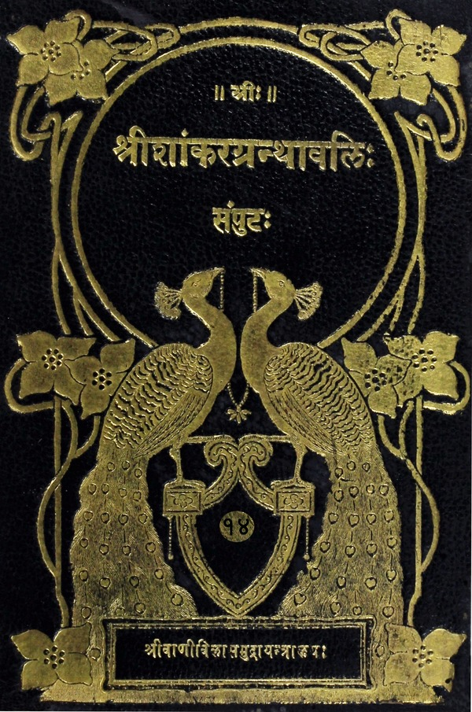

श्रीशांकरग्रन्थावलिः
संपुटः १ - २०
Home
About
Concluding Note
T. K. Balasubramaniam
Superhuman efforts of a savant
Prema Nandakumar
Views on the Sri Vani Vilas Press
His (Sri TKB’s) aim
Volumes
विवेकचूडामणिः
गुरुनमस्कारः
नरजन्मप्रशंसा
आत्मबोध एव मुक्तिहेतुः
मुक्त्यर्थो यत्नविशेषः
वस्तुविचारः कर्तव्यः
आत्मविद्याधिकारी
साधनचतुष्टयसंपत्तिः
गुरूपसत्तिः
मार्गोपदेशः
मोक्षहेतवः
आत्मानात्मविवेचनम्
स्थूलशरीरम्
सूक्ष्मशरीरम्
कारणशरीरम्
परमात्मा
बन्धः
बन्धमोक्षोपायः
अन्नमयकोशविवेकः
प्राणमयकोशविवेकः
मनोमयकोशविवेकः
विज्ञानमयकोशविवेकः
अनाद्यविद्यानाशोपपत्तिः
आनन्दमयकोशविवेकः
साक्षिस्वरूपम्
ब्रह्मणोऽद्वितीयत्वम्
ब्रह्मस्वरूपम्
तत्त्वमसिमहावाक्यार्थः
वासनाक्षयोपायः
प्रमादत्यागः
समाधिः
जीवन्मुक्तलक्षणम्
ज्ञानात्कर्मविलयः
ब्रह्मणि नानात्वविषेधः
आत्मयोगः कर्तव्यः
शिष्यस्य स्वानुभवकथनम्
गुरोरनुशासनम्
ब्रह्मविदः समाचारः
शरीरपातः
ब्रह्मभावापत्तिः
उपदेशसहस्त्री (गद्यप्रबन्धः)
१. शिष्यानुशासनप्रकरणम्
चिकीर्षितप्रतिज्ञापूर्वकः शास्त्रीयानुबन्धसंग्रहः
संग्रहेणोक्तस्यार्थस्य विवरणम्
गुरूपसत्तेरवश्यकार्यत्वोक्तिः
पुनः पुनर्गुरूपदेशे हेतूपन्यासः
ज्ञानोदयहेतुजातोपदेशः
गुरुकर्तृकोपदेशक्रमः
श्रुतिभिः स्मृतिभिश्च ब्रह्मणो लक्षणं ग्राहयेदित्युक्तिः
उपदेशानन्तरं मतिनैश्चल्याय शिष्यं पुनः पृच्छेदित्याचार्यकृत्यम्
अप्रतिपत्त्यादिदोषाच्छिष्यस्योत्तरम्
पुनरुपदेशेन तादृशं दोषं निवारयत्याचार्यः
स्थूलदेहाभिमानत्यागानन्तरं शिष्यस्योक्तिः
शिष्यप्रशंसापूर्वकमाचार्यस्योत्तरम्
उक्तार्थवैशद्याय शिष्यप्रश्नोत्थापनम्
उत्तरदानार्था गुरोः प्रवृत्तिः
शरीरस्य भिन्नजात्यन्वयसंस्कारत्वज्ञापनायोपपत्तिप्रकारः
शरीरोत्पत्त्युपदेशः
सूक्ष्मशरीराभिमानत्याजनम्
परमात्मैव क्षेत्रज्ञ इत्यत्र स्मृतयः
परजीवयोरभेदेऽनुभवविरोध इति शङ्कानिरासपूर्विकाभेददृष्टिनिन्दा
अभेददृष्टिप्रशंसापूर्वकं ससाधनस्य कर्मणः प्रतिषेधोपपादनम्
उक्तस्यैव ब्रह्मात्मैक्यस्य युक्त्या व्यवस्थापनम्
वेदनादीनामनात्मधर्मत्वोपपादनम्
ब्रह्मात्मैकत्वे लौकिकवैदिकव्यवहारविरोधशङ्का
अत्राचार्यसमाधानम्
कर्मकाण्डाप्रामाण्यशङ्का तत्परिहारश्च
अविद्योन्मूलनफलम्
मुमुक्षोत्पत्तिकालीनससाधनकर्मत्यागनिगमनम्
कूटस्थाद्वयात्मबोधप्रकरणम्
कृतसंन्यासस्य मुसुक्षोर्विधितः श्रवणकर्तव्यत्वसूचनापुरःसरं सं संसारविषयकशिष्यप्रश्नावतारणम्
शिष्याश्वासनपूर्वकं गुरोरुत्तरदानम्
पुनर्विशेषबुभुत्सया विनेयप्रश्नोऽविद्याविषयकः
गुरोरुत्तरम्
अध्यासानुपपत्तिप्रदर्शनपूर्वकः शिष्यप्रश्नः
गुरोरुत्तरम्
अध्यस्तत्वादात्मनः शिष्याशङ्किता तत्सत्त्वानुपपत्तिः
अत्रोत्तरम्
वैनाशिकपक्षप्रातिदोषाशङ्कातत्परिहारौ
परमते दूषणापादनम्
प्रकारान्तरेणाध्यासानुपपत्तिशङ्का तन्निरासश्च
कूटस्थविषयकसंशयतत्परिहारौ
उपलब्धृत्वेन कूटस्थत्वानुपपत्तिशङ्कातत्परिहारौ
अवस्थात्रयसाक्षितया कूटस्थत्वानुपपत्तिशङ्कातत्परिहारश्च
संविन्नित्यत्वाक्षेपतत्परिहारौ
प्रमातृत्वानुपपत्तिशङ्कातत्परिहारौ
कर्तृत्वाक्षेपतत्परिहारौ
अवगतेः कूटस्थत्वफलत्वयोर्विरोधशङ्कातत्परिहारौ
द्वैतस्य मृषात्वप्रकटनम्
३. परिसंख्यानप्रकरणम्
सोपस्कारपरिसंख्यानप्रकारोपदेशः
आत्मनः शब्दादिभिरनभिभवत्वानुचिन्तनम्
शब्दाद्यनुभवानुचिन्तनमात्मनोऽविकारित्वानुचिन्तनं च
उपदेशसहस्त्री (पद्यप्रबन्धः)
१. उपोद्धातप्रकरणम्
मङ्गलाचारपूर्वकं ब्रह्मविद्यारम्भसमर्थनम्
ज्ञानस्यैव मोक्षहेतुत्वोक्तिः
ज्ञानकर्मसमुच्चयवादस्तन्निरासश्च
कर्मकाण्डाप्रामाण्यशङ्कातत्परिहारौ
अविद्यायाः पुनरनुद्भवः
विद्यायाः सहकारिनिरपेक्षत्वेनैव मोक्षहेतुत्वकथनम्
उपनिषच्छब्दार्थनिर्वचनम्
२. आत्मज्ञानोत्पत्तिप्रकरणम्
ब्रह्मात्मज्ञानस्य वाक्यादनुत्पत्तिशङ्कापरिहारः
उत्पन्नस्य ज्ञानस्य प्रत्यक्षादिबाध्यत्वशङ्कापरिक्षारः
३. ईश्चरात्मप्रकरणम्
जीवब्रह्मणोरभेदनिरूपणम्
अभेदाभावे श्रुत्यनुपपत्तिप्रदर्शनम्
४. तत्त्वज्ञानस्वभावप्रकरणम्
आत्मनो ज्ञानं न मोक्षसाधनम्, संचितानेककर्मप्रतिबन्धादिति शङ्का तत्रोत्तरं च
५. बुद्ध्यपराधप्रकरणम्
सर्वस्य जन्तोरात्मज्ञानाग्रहे उदङ्कस्याख्यायिका
संसारविभ्रमकारणं तत्प्रमाणं च
पदार्थविवेकवता भाव्यं मुमुक्षुणेति कथनम्
विशेषापोहप्रकरणम्
स्थूलोपायेन पदार्थशोधनप्रकारोपदेशः
विशेषणानामनात्मत्वप्रदर्शनम्
आत्मनोऽन्यनिरपेक्षा स्वतःसिद्धिः
७. बुद्ध्यारूढप्रकरणम्
बुद्ध्यारूढस्यार्थस्य स्वानुभवावष्टम्भेन स्पष्टीकरणम्
आत्मनो विकारित्वादिदोषाभाबोपपादनम्
आत्मनः शुद्धत्वाद्वितीयत्वयोर्वर्णनम्
८. मतिविलापनप्रकरणम्
बुद्ध्यात्मनोः संवादरूपेण बुद्धेः प्रशमोपदेशः
एतत्प्रकरणनिर्माणे निमित्तकथनम्
९. सूक्ष्मताव्यापिताप्रकरणम्
आत्मनो निरतिशयं सूक्ष्मत्वं व्यापित्वं च
ब्रह्मादीनामात्मानं प्रति शरीरत्वम्
स्वरूपज्ञानस्य निर्विषयत्वं नित्यत्वं च
१०. दृशिस्वरूपपरमार्थदर्शनप्रकरणम्
आत्मनो निर्विषयज्ञानस्वभावत्वस्य स्वानुभूत्यभिनयेन प्रकटनम्
जन्मजरादिविक्रियाराहित्येन कूटस्थाद्वयस्वाभाव्यस्य श्रुतिप्रदर्शनपूर्वकमुपपादनम्
आत्मतत्त्वपरिज्ञानस्य कैवल्यफलकत्वकथनम्
आत्मवित्स्वरूपनिरूपणम्
११. ईक्षतृत्वप्रकरणम्
कर्मणः, कर्मसहितज्ञानस्य वा मोक्षहेतुत्वशङ्कानिरासः
द्वैताभावे प्रत्यक्षादिविरोधनिरसनम्
कर्मणो मोक्षहेतुतायामनुपपत्तिः
१२. प्रकाशप्रकरणम्
साभासान्तःकरणविवेकेनात्मनो याथात्म्याज्ञानम्
आत्मनो याथात्म्यज्ञानसिद्धये तत्त्वमिति श्रुत्युपदेशः
चित्प्रकाशस्य नित्यत्वोपपाटनपूर्वकमात्मनो नियोज्यत्वाभावप्रतिपादनम्
१३. अचक्षुष्ट्वप्रकरणम्
आत्मनः शुद्धत्वाचलत्वादिव्यवस्थापनम्
संसारनिवृत्त्युपायकथनतो मुमुक्षुशिक्षणा
अविकारित्वाद्विक्षेपः समाधिश्च न स्त इति कथनम्
आत्मनः पूर्णत्ववर्णनम्
अहं ब्रह्मास्मीति सदानुसंदध्यादिति मुमुक्षुप्रोत्साहनम्
१४. स्वप्नस्मृतिप्रकरणम्
अन्तःकरणस्यापरोक्षत्वं तत्फलं च
आत्मनि हेयाद्यभावः अनुभवेनाप्यवगम्यतेति कथनम्
मोक्षाय स्मृतिः कर्तव्या
ब्रह्मणोऽक्षरत्वम्
आत्मविदः सफलं कर्मेति शङ्कावारणम्
आत्मज्ञस्य फलम्
आत्मनोऽकार्यशेषत्वम्
आत्मनो देहद्वयविविक्तत्वम्
१५. नान्यदन्यत्प्रकरणम्
स्वभावाशुद्ध आत्मा साधनविशेषेण शुद्धो भवतीति केषांचिन्मतस्य निरासः
आत्मनः साक्षित्वम्
विदुषः क्रियात्यागः स्मर्तव्यमात्मरूपं च
ब्रह्म प्रतिपत्तुं पदार्थविवेकं कुर्यान्मुमुक्षुरिति कथनम्
जागरद्यवस्थाः, तत्साक्षी आत्मा च
मुमुक्षोः कर्तव्योपदेशः
स्वयंप्रकाशत्वं ज्ञेयत्वाभावश्च
१६. पार्थिवप्रकरणम्
स्थूलशरीरात्मवादिमतनिराकरणम्
इन्द्रियात्मवादिमतनिराकरणम्
बुद्ध्यात्मवादिमतनिराकरणम्
शून्यात्मवादिमतनिराकरणम्
दिगम्बरमतनिराकरणम्
शाक्यमतनिराकरणम्
शून्यमतनिराकरणाय स्वमतसामञ्जस्यम्
प्रधानपुरुषयोः संबन्धाभावप्रपञ्चम्
वैशेषिकमतप्रक्रियादूषणम्
बन्धस्याज्ञानात्मकत्वम्
मोक्षस्वरूपम्
परपक्षनिराकरणं संक्षिप्य स्वमतमुपसंहरति
१७. सम्यङ्मतिप्रकरणम्
गुरुदेवतानमस्कारः
आत्मलाभस्य परमत्वम्
आत्मनो ब्रह्मणश्चैकत्वम्
चित्तस्य तपोभिः शोधनम्
मायाकल्पितमात्मनो बहुत्वम्
बुद्धौ आत्मनो ग्रहणं नित्यत्वादिकं च
कर्मणां त्याज्यत्वम्
गुरूपसत्तिः
पदार्थविवेकः
प्रतिबुद्धस्य मुमुक्षोरनुसंधानप्रकारः
उक्तस्य प्रकरणार्थस्योपसंहारः
१८. तत्त्वमतिप्रकरणम्
गुरुनमस्कारपूर्वकं संप्रदायशुद्ध्यभिधानम्
तत्त्वमस्यादिवाक्यादेवापरोक्षज्ञानमनर्थनिवृत्तिफलमुत्पद्यते
प्रसंख्यानवादिमतोत्थापना
स्वसिद्धान्तप्रदर्शनम्
आत्मनः प्रत्ययागोचरत्वम्
आत्मनः शब्दागोचरत्वम्
एकदेशिमतानि दूषयितुं संग्रहप्रकारः
आभासनिरूपणपूर्वकं चिच्छायावादिप्रभृतिमतनिराकरणम्
आत्मनि जानात्यादिशब्दव्यवहारानुपपत्तिशङ्का
एतत्परिहारः
बूद्धिविषये तार्किकसौगतादिमतनिरासः
आभासविषये शङ्कापरिहारौ
युष्मदस्मद्विवेकः
विज्ञातपदार्थतत्त्वे पुरुषे महावाक्यं फलवद्विज्ञानं जनयतीति वर्णनम्
प्रतिपत्तव्यार्थस्वभावनिरूपणम्
विज्ञानवादिबौद्धमतनिराकरणम्
प्रत्ययाध्यक्षयोः संबन्धः
बिवेकाविवेकयोर्बाध्यबाधकभावः
तत्त्वंपदयोरेकार्थत्वे पर्यायत्वादिशङ्कापरिहारः
त्वंपदार्थविवेकः
तत्त्वमसीत्यादिवाक्यार्थविचारः
प्रकारान्तरेण प्रसंख्यानप्राप्तिनिरासः
प्रकरणार्थोपसंहारः
१९. भेषजप्रयोगप्रकरणम्
संसारस्य मनोध्यासनिबन्धनत्वद्योतनायात्ममनः संवादः
आत्मनोऽद्वितीयत्वम्
आत्मनो विकल्पनाद्यविषयत्वम्
विचारोऽद्वैतनिश्चयहेतुः
उक्तार्थनिश्चयशून्यानामनर्थप्राप्तिः
वस्तुमात्रस्य कारणत्वकार्यत्वयोर्निरासः
द्वैताभासनिरूपणं मङ्गलं च

विवेकचूडामणिः & उपदेशसहस्री
(Vivekachudamani & Upadesasahasri)